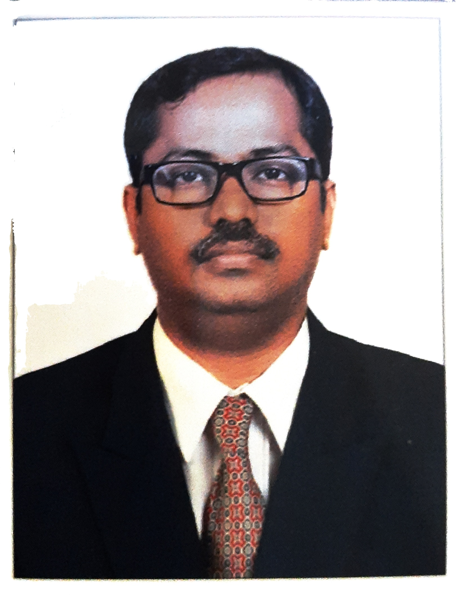

About Us
A multi-product, home-based enterprise rooted in trust, care and community impact.
Established in 2011, Royal Indian has grown from a small home brand into a diversified venture spanning finance, consulting, AI solutions, wellness and food services.
Royal Indian
Quality, innovation and social responsibility across every initiative.
Royal Indian is a multi-product, home-based enterprise rooted in trust, care, and community impact. Established in 2011, we have grown from a small home brand into a diversified venture spanning finance, consulting, AI solutions, wellness, and food services.
Our initiatives include BRIKS Capitals, Manasu Wellness & Research Center, Royal Indian Kitchen, and Nutripoint Naturals, each committed to quality, innovation, and social responsibility.
We began as a home brand and remain one by choice because we believe: healthy families create happy homes, and happy homes build a stronger nation.
Our Initiatives
- BRIKS Capitals
- Manasu Wellness & Research Center
- Royal Indian Kitchen
- Nutripoint Naturals
Community Impact
Purpose-driven work beyond business.
50+
Home kitchens supported
10,000+
Families served with free food and clothing
1,000+
Pediatric cancer patients assisted
100+
De-addiction awareness programs conducted
Royal Indian has also provided emergency medical funding and continues to align business growth with practical social care.

Founder & CEO Profile
M. John Kamal Royal (JK Royal)
M. John Kamal Royal, widely known as JK Royal, is the Founder & CEO of Royal Indian, with over 22 years of extensive experience across investment banking, corporate consultancy, compliance management, food safety auditing, and wellness training.
Born on 31st May 1986 in Kannanur, located in the Tiruchirappalli district of Tamil Nadu, he comes from a family rooted in philanthropy and community service. Despite an early association with a traditional and respected background, his life took a challenging turn at a young age, resulting in the loss of family wealth and stability.
Following the passing of his father, a homeopathic doctor, he was raised by his mother, who supported the family through tailoring and home-based work. These formative experiences instilled resilience, discipline, and a strong sense of responsibility. Despite financial hardship, he secured 2nd rank at the school level in his 10th standard public examinations, reflecting early academic excellence.
He began his professional journey at the age of 18 as an Office Assistant in a stock broking firm, while simultaneously pursuing higher education through part-time study. He holds a B.Sc. in Information Technology and an MBA in Financial Management from Annamalai University. By the age of 25, he had earned 11 technical certifications, including NCFM and NISM, establishing a strong foundation in financial markets.
Transitioning into corporate compliance, JK Royal served as a Compliance Officer and Assistant Manager in leading Registrar & Transfer Agencies and investment banking institutions in India. He also pursued Company Secretary (Intermediate), strengthening his expertise in corporate laws and regulatory frameworks.
Alongside his corporate career, he actively undertook pro bono initiatives, representing and supporting financially disadvantaged investors in claim settlements and dispute resolution across regulatory and arbitration platforms such as the National Stock Exchange of India, BSE Limited, Securities and Exchange Board of India, and Securities Appellate Tribunal, as well as alternative dispute redressal forums and international human rights platforms.
In 2023, he faced a major health challenge and underwent surgery for Thyroid Cancer, including total thyroidectomy and gallbladder removal. Emerging as a cancer survivor, he made a decisive shift away from corporate employment to focus on recovery and redefine his purpose.
This transformative phase led to the expansion of Royal Indian into a purpose-driven, multi-sector ecosystem.
Founder-Led Initiatives
A purpose-driven, multi-sector ecosystem.
Royal Indian Kitchen
Medical diet-focused, FSSAI-certified home kitchen serving patients and healthcare institutions.
Manasu Wellness & Research Center
Psychological research, wellness coaching, pediatric cancer support, and social care programs.
Nutripoint Naturals
Home-based food manufacturing empowering homemakers and senior citizens with sustainable income opportunities.
BRIKS Capitals
Business consultancy and startup funding solutions.
Leadership Philosophy
"Resilience shapes the journey, but purpose defines the legacy. True leadership lies in empowering lives and building a better society."
Visionary Outlook
Driven by a mission of inclusive growth, JK Royal continues to lead initiatives that empower homemakers, support healthcare needs, and contribute to nation-building, while integrating business excellence with social responsibility.
Credentials
Research, food safety and compliance experience.
JK Royal is also a Fellow Researcher in People & Business Psychology and Nutritional & Diet Studies, a Certified Global Food Safety Auditor (FSSC 22000 V6, HACCP, FOSTAC Advanced Manufacturing), and a Certified Compliance Officer in stock broking operations.
He actively contributes to global and social causes as a voluntary member of international cancer research initiatives and human rights advocacy, including associations such as Amnesty International.
Core Expertise
- Investment Banking & Financial Markets
- Corporate Compliance & Regulatory Advisory
- Business Strategy & Consultancy
- Food Safety & Quality Systems
- Wellness, Nutrition & Behavioral Research
- Social Impact & Community Development